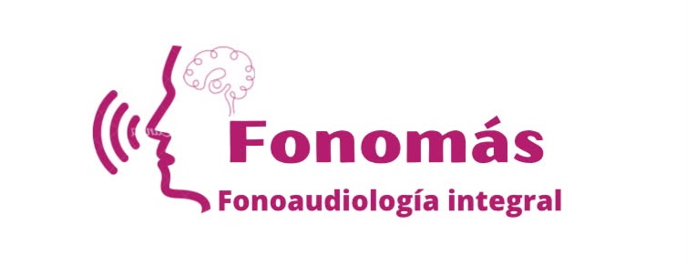

NUESTRO SERVICIO
Fonoaudiología
En Fonomás ofrecemos atención fonoaudiológica orientada a evaluar, acompañar y fortalecer las habilidades relacionadas con la comunicación, el lenguaje, la voz y la deglución.
Conoce nuestros tratamientos
FONOAUDIOLOGÍA INTEGRAL
NUESTRO SERVICIO
En Fonomás ofrecemos atención fonoaudiológica orientada a evaluar, acompañar y fortalecer las habilidades relacionadas con la comunicación, el lenguaje, la voz y la deglución.
Conoce nuestros tratamientosNUESTROS TRATAMIENTOS
Conoce las diferentes opciones de atención que tenemos disponibles para acompañarte en el desarrollo de tus habilidades.
Evaluación y tratamiento de dificultades relacionadas con el lenguaje, la pronunciación y la producción de los sonidos del habla.
Precio: $80.000 COP
Duración: consultar
Intervención dirigida a personas con alteraciones de la voz, mediante ejercicios de respiración, coordinación fonorrespiratoria, resonancia y calidad vocal.
Precio: $80.000 COP
Duración: consultar
Intervención para personas que presentan dificultades al tragar alimentos, buscando favorecer una deglución segura y funcional.
Precio: $150.000 COP
Duración: Consultar
ESTAMOS PARA ORIENTARTE
Comunícate con nosotros para recibir más información sobre los tratamientos, conocer sus modalidades y consultar la disponibilidad de atención.
Solicitar información